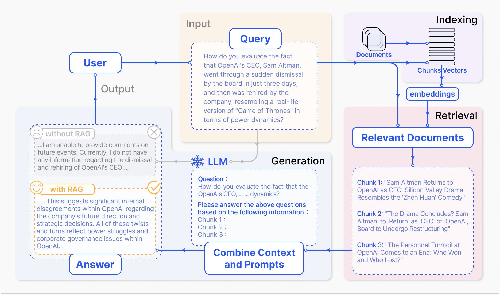
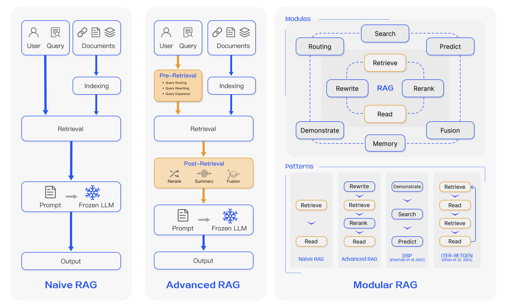
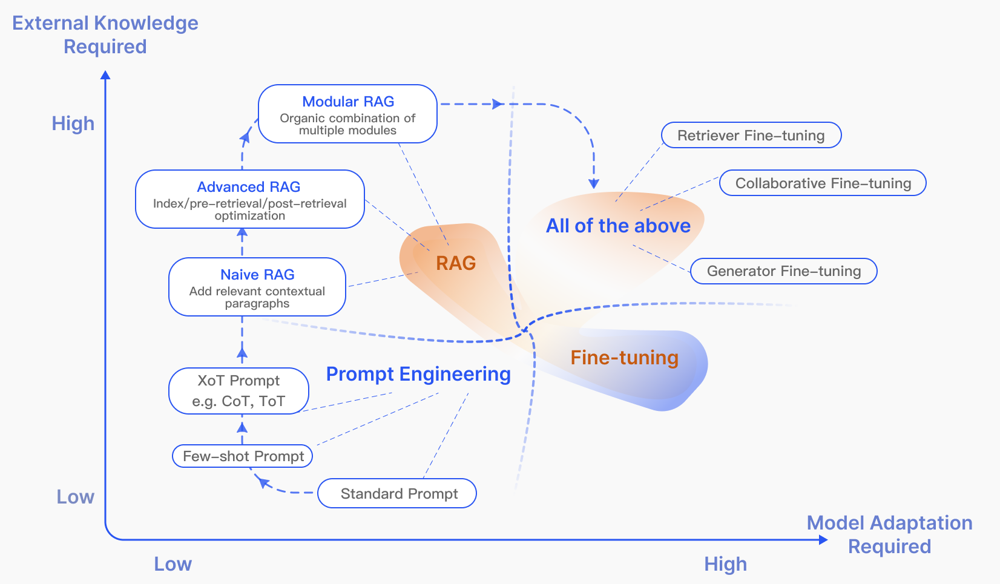
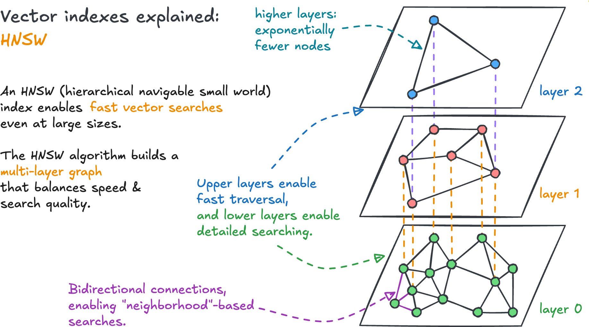

AD698 - Applied Generative AI
M05 Lecture Note 01: RAG Foundations and Retrieval
Nakul R. Padalkar
Boston University
March 12, 2024
How to print Revealjs slides

Why RAG Exists
LLMs Are Powerful, But Not Grounded
- Strong on fluent generation
- Weak on current, domain-specific, auditable facts
- Can hallucinate under uncertainty (Zhang et al. 2023)
Core Idea of RAG
Retrieval-Augmented Generation =
- Retrieve relevant evidence
- Condition generation on that evidence
- Improve grounding and traceability
Tip
RAG converts static model memory into dynamic, evidence-aware answering.
Standard Pipeline

- Indexing: split, embed, store
- Retrieval: top-k relevant chunks
- Generation: answer with context
RAG Paradigms
Three Paradigms

Naive RAG
- Simple retrieve-then-read
- Fast to prototype
- Common weaknesses:
- irrelevant chunks
- missed evidence
- hallucinations
Advanced RAG
- Query rewrite / expansion
- Better chunking and metadata
- Reranking and context compression
- Hybrid retrieval (sparse + dense)
Modular RAG
- Router + retriever + reranker + generator + evaluator
- Dynamic execution paths
- Easier to adapt for enterprise constraints
RAG vs Fine-Tuning

- RAG: freshness + traceability
- Fine-tuning: behavior/style adaptation
- Production systems often combine both
Retrieval Design
Retrieval Sources
- Unstructured text (PDF, HTML, markdown)
- Semi-structured files (tables in PDFs)
- Structured stores (KG, SQL)
- Model-generated auxiliary context
Chunking and Metadata
- Chunk size and overlap control recall vs noise
- Metadata enables filtering and routing
- Structural chunking beats naive fixed windows
Query Optimization
- Query expansion (multi-query, sub-queries)
- Query transformation (rewrite, HyDE)
- Query routing by intent/domain
Vector Indexing and HNSW
Why Indexing Matters
- Brute-force search is too slow at scale
- ANN indexes trade exactness for speed
- In RAG, latency and recall must both be acceptable
HNSW Intuition

- Top layers: sparse, long-range links
- Bottom layers: dense, local refinement
- Search: coarse-to-fine descent
Story Map for Search

Interpretation:
- Early phase: explore region quickly
- Late phase: refine local neighbors
HNSW Search Math
Greedy move rule:
\begin{align} \text{move from }x\text{ to }y\text{ if } d(q,y) < d(q,x) \end{align}
Layer assignment decays exponentially:
\begin{align} P(L = \ell) \propto e^{-\ell/m_L} \end{align}
Rule of thumb:
\begin{align} m_L \approx \frac{1}{\ln(M)} \end{align}
Tuning Knobs
- M: graph connectivity (memory-heavy)
efConstruction: build-time search breadthefSearch: query-time search breadth
Tradeoff summary:
- recall increases with larger values
- query latency mainly rises with
efSearch - memory mostly rises with M
Why This Matters for Assignment 4
Assignment 4 requires fair comparison of:
- Prompt-only
- RAG
- Pretraining-only
RAG quality depends heavily on retrieval quality. If retrieval fails, generation cannot recover.
Preview of P2
Next Lecture
- RAG generation patterns
- Evaluation matrix design
- LLM-as-a-judge workflows
- Deploying retriever/generator endpoints
Zhang, Y., Li, Y., Cui, L., Cai, D., Liu, L., Fu, T., Huang, X., Zhao, E., Zhang, Y., Chen, Y., and others. 2023. “Siren’s Song in the AI Ocean: A Survey on Hallucination in Large Language Models,” arXiv Preprint arXiv:2309.01219.